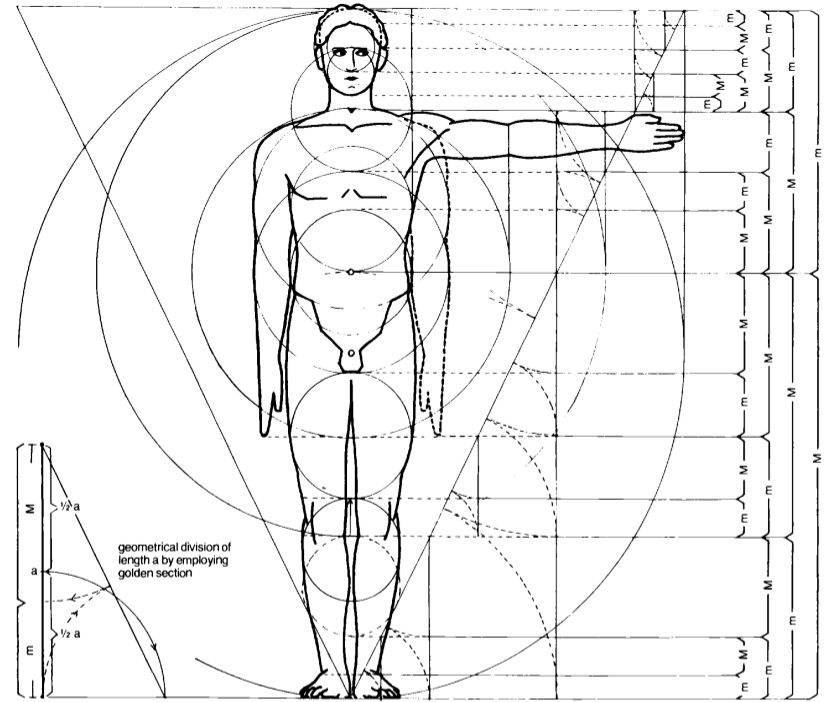
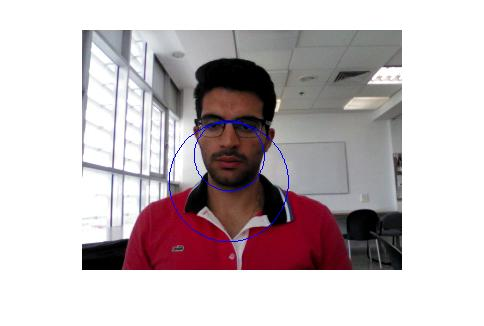
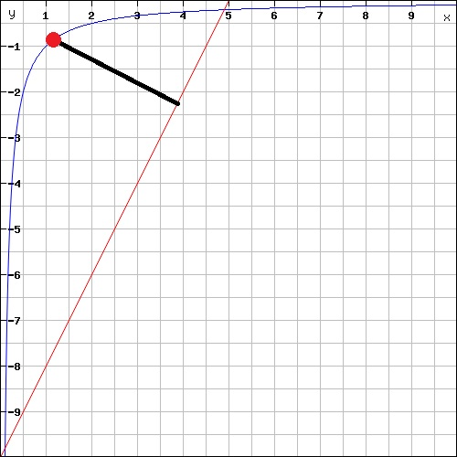
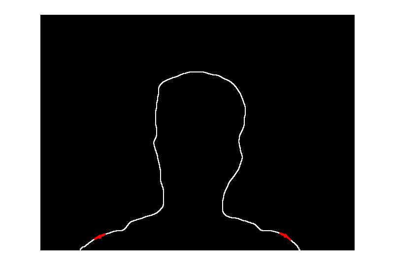

Project Sit is a project that will help every user to sit properly while using his computer. The application will notify the user when his sitting posture is wrong so he can correct it and keep his back and neck healthy. The application uses Intel RealSense camera to gather depth information and some features of its SDK.
The application starts by first recording and gathering the information of the best sitting posture the user can be in. After gathering all information, the camera will get the live user sitting posture and compare it with the information saved from the recorded scene.
To estimate the shoulders' location, we used the human face golden ratio. The Intel SDK gave us 3 points ( right eye, left eye and chin).

*The body golden ratio.
*The binary image
*Golden ratio used to find intersection points between circle and shoulders
After finding the intersection points, now we search in the region and find the farthest point from the linear line that intersects with the intersection point we found earlier and the beginning of the edge.
The shoulder plot "edge function".
Shoulder detection result
Run ProjectSit.exe.
For more help see the readme file.